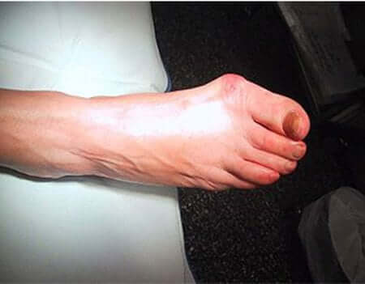
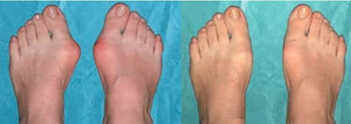
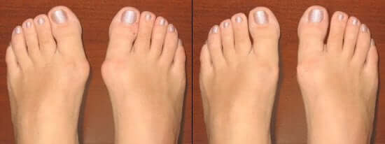
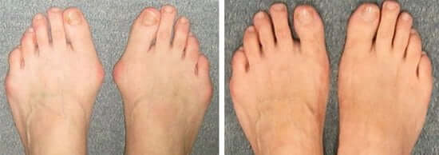

Наверное, таких как я – простых, пожилых и уже не совсем здоровых женщин у нас в стране миллионы. У каждой первой то гипертония, то диабет, то еще какая-нибудь болячка. А то и несколько. Мне врачи поставили диагноз - валгусная деформация стоп, а по-народному «косточка» или «шишка» на большом пальце. У меня от неё страдали и бабушка, и мама. Маме даже операцию делали. Так что у меня это наследственное. Да и в молодости любила пофорсить в узких «лодочках» на высоких «шпильках».

В свои 54 года у меня валгусная деформация стоп, которая раньше
устранялась только операцией.
Болезнь довольно быстро прогрессировала. Сначала эта шишка доставляла мне просто дискомфорт на ноге. Потом стала сильно болеть. Из-за того, что большой палец стал изгибаться внутрь стопы, он стал толкать второй, тот стал подниматься вверх и упираться в верх носка обуви. А внизу стопы образовался болезненный мозоль. И к своим 54 годам я в своей обуви уже вообще не могла ходить! В ней мои ноги были словно в раскаленных тисках.
Поехала я в областной центр. Там врач посмотрел-посмотрел на мои ноги и сказал, что тут уже ничего не сделаешь и надо оперироваться, если хочу ходить. А то у меня уже начался хронический бурсит большого пальца (воспаление) и стал развиваться артроз.
Вышла я от врача и заплакала. Ведь в той же больнице лечили мою маму. Сколько она к ним раз ездила на лечебную физкультуру. Сколько денег отвезла. Все без толку. А потом операцию сделали. Стало, конечно, полегче. Но боли все равно остались. И много ходить она все равно не может.
Но делать нечего. Стали мы собирать деньги на операцию. Без нее я вообще не смогла бы ходить. Но как-то утром приходит ко мне в комнату сын и со своего телефона начинает читать. Оказывается, он нашел в Интернете статью, в которой пишется, об Orthofix. Там саше разводят с водой, мажут на суставы, он выпрямляет сдавленные и искривленные мягкие части основного сустава большого пальца, а также исправляет развивающееся искривление. И люди пишут, что за месяц-другой, смогли выпрямить палец, убрать эту проклятую шишку и обойтись без операции! Представляете!!
Сын тут же по Интернету заказал это средство. Через неделю я уже смогла его использовать.
Как только я воспользовалась препаратом, спустя пару дней, я почувствовала, что болеть стопы стали меньше.
Спустя неделю, боли практически исчезли. Спустя еще немного я смогла вновь надеть любимую обувь. Вначале было немного дискомфортно, но за две недели, я практически смогла выпрямить свой большой палец и убрать шишку! А за месяц я полностью избавилась от валгусной деформации!

Результат месячного лечения при помощи Orthofix
После выздоровления прошло полгода. Я вновь могу свободно ходить, вести хозяйство, ходить на охоту и заниматься внуками.
После выздоровления я зажила полноценной жизнью
Заниматься внуками
Все же, какое это счастье – быть здоровой! Спасибо разработчикам Orthofix
P.S. Сын заказывал Orthofix на официальном сайте производителя.
Заполните форму для получения акционной цены!
Количество акционных упаковок ограничено!
Забронируйте Ортофикс
по акции
Спешите! Осталось 53 упаковок по акции!
По акции:
Гарантия избавления от вальгуса стопы на 100%
иначе полный возврат денег
Чтобы забронировать Ортофикс по льготной цене - заполните форму.
Отличная вещь! Раньше носила только бесформенные широкие сабо, а еще лучше – домашние мягкие тапочки. Пользуюсь уже два месяца – теперь хожу с дочкой выбираю себе любую обувь в магазинах.
Я балерина, не так чтобы известная, но в своем городе обо мне знают. То, что на сцене я «блещу» во всей красоте – адский труд для меня. Встать на пуанты в последнее время вообще не могла – деформация стопы. Если для кого-то шишечки приносят только эстетический дискомфорт, для меня они значили окончание карьеры. На Orthofix попала случайно – у своей коллеги увидела. Спросила, что это, она все о нем рассказала. Решила тоже заказать попробовать. Таких результатов я, если честно, не ожидала. А ведь думала, что все, прощай балет, прощай танцы.
А я делала операцию даже лет 10 назад. Первое время вроде бы ничего, а потом снова все началось. Суставы болят, косточка растет, ходить не могу. Пыталась в интернете найти что-то полезное, так там вообще такую чепуху пишут. То яйцом советовали, то солью. Под нож опять ложиться не хотела. Наткнулась на подобную статью, попробовала, помогло.
А те, кто говорят, что эффекта нет – по-любому на подделку нарвались!
О препарате знаю не понаслышке. Сама с его помощью вылечилась. Хочу добавить, что Лидии Петровне очень повезло, что сын наткнулся именно на это средство.